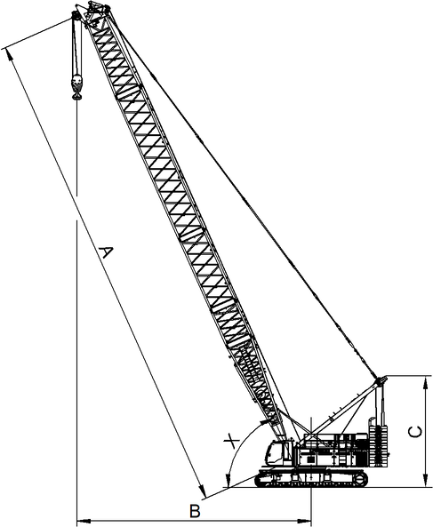

Oberwagen drehen

GEFAHR
Unsachgemäße Bedienung des Drehwerks!
Kippen der Maschine, Versagen der Struktur.
Drehwerk langsam beschleunigen. |
Drehwerk langsam abbremsen. |
ACHTUNG
Ungewöhnliche Geräusche (z. B. Knacken, Knirschen, Poltern, Brummen, Dröhnen, Schleifen) beim Drehen des Oberwagens!
Beschädigung des Drehwerks, Blockieren der Drehverbindung.
Last sofort am Boden absetzen. |
Ausleger in Parkposition stellen. |
Betriebsfreigabehebel hochziehen. |
Liebherr-Kundendienst kontaktieren. |
ACHTUNG
A-Bock1 ragt über Heckballast hinaus!
Beschädigung des A-Bock1.
Position des A-Bock1 vor Drehen des Oberwagens prüfen. |
Werte in folgender Tabelle berücksichtigen. |

Fig. 3813: Position des A-Bock1 in Abhängigkeit des Hauptauslegerwinkels bei verschiedenen Hauptauslegerlängen
Fig. 3813: Position des A-Bock1 in Abhängigkeit des Hauptauslegerwinkels bei verschiedenen Hauptauslegerlängen
Ab den angegebenen Hauptauslegerwinkeln ragt der A-Bock1 über den Heckballast hinaus. Je nach Hauptauslegerlänge verändert sich der Hauptauslegerwinkel.
Hauptauslegerlänge | Ausladung | Höhe des A-Bock1 | Hauptauslegerwinkel |
|---|---|---|---|
A | B | C | X |
20 m 66 ft | 9 m 29.53 ft | 8.6 m 28.22 ft | 71,5° |
38 m 125 ft | 18.1 m 59.38 ft | 8.6 m 28.22 ft | 66° |
62 m 203 ft | 30.2 m 99.08 ft | 8.7 m 28.54 ft | 63,5° |
74 m 243 ft | 36.2 m 118.77 ft | 8.7 m 28.54 ft | 63° |
86 m 282 ft | 43 m 141.08 ft | 8.6 m 28.22 ft | 63° |
Position des A-Bock1 in Abhängigkeit des Hauptauslegerwinkels bei verschiedenen Hauptauslegerlängen
Durch schnelles Drehen des Oberwagens entsteht Fahrtwind. Durch den Fahrtwind erhöht sich der Wert der Anzeige Windgeschwindigkeit auf der Bildschirmseite Betrieb.